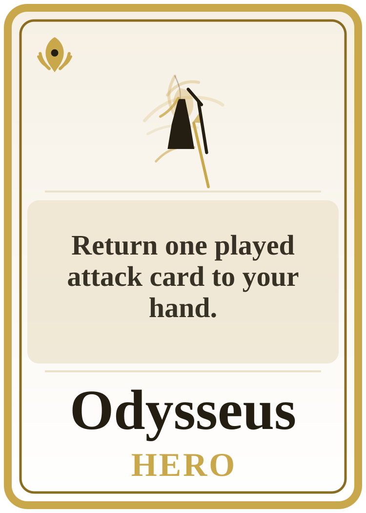
Odysseus
Return one played attack card to your hand. A cunning bronze-age king in travel-worn cloak and polished armor, holding a...
These hero cards keep the frame language you approved, but the central portrait zone now reflects each locked Greek identity more directly. Gold remains the shared hero material, while the portrait silhouette and emblem watermark are driven by the hero-specific art briefs.

Return one played attack card to your hand. A cunning bronze-age king in travel-worn cloak and polished armor, holding a...
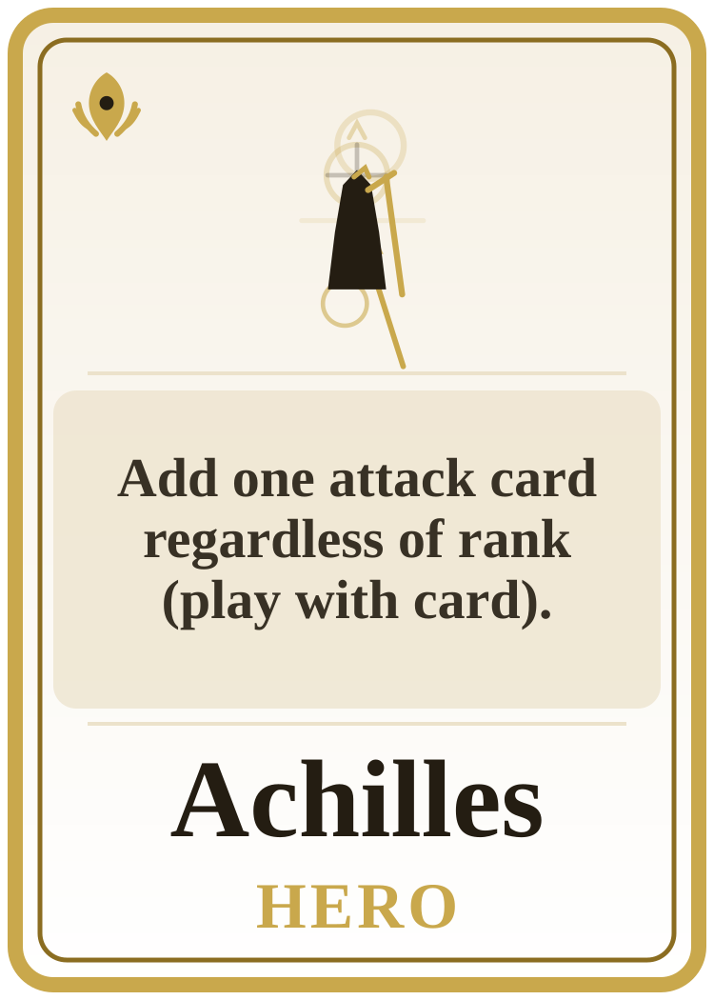
Add one attack card regardless of rank (play with card). A radiant unstoppable warrior in bright heroic armor, spear-forward and mid-stride, with...
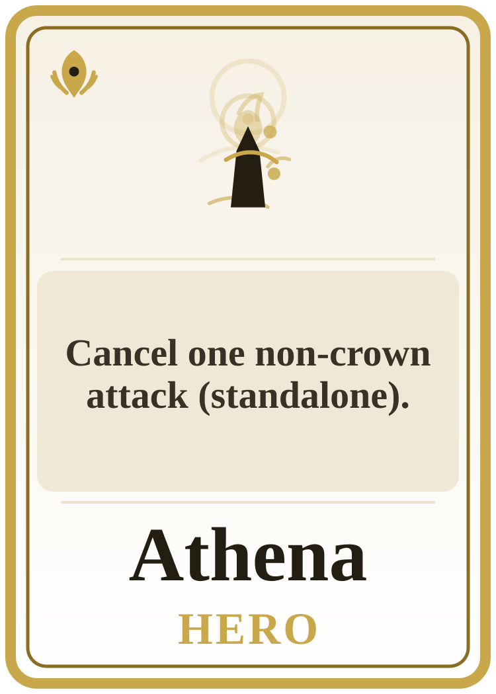
Cancel one non-crown attack (standalone). A calm armored goddess with owl and aegis motifs, poised as a...
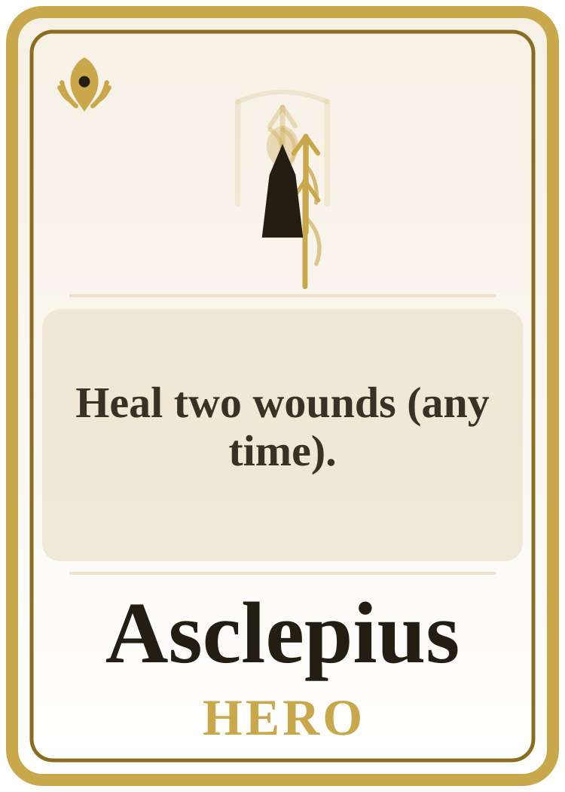
Heal two wounds (any time). A serene divine healer in pale robes with a sacred staff and...
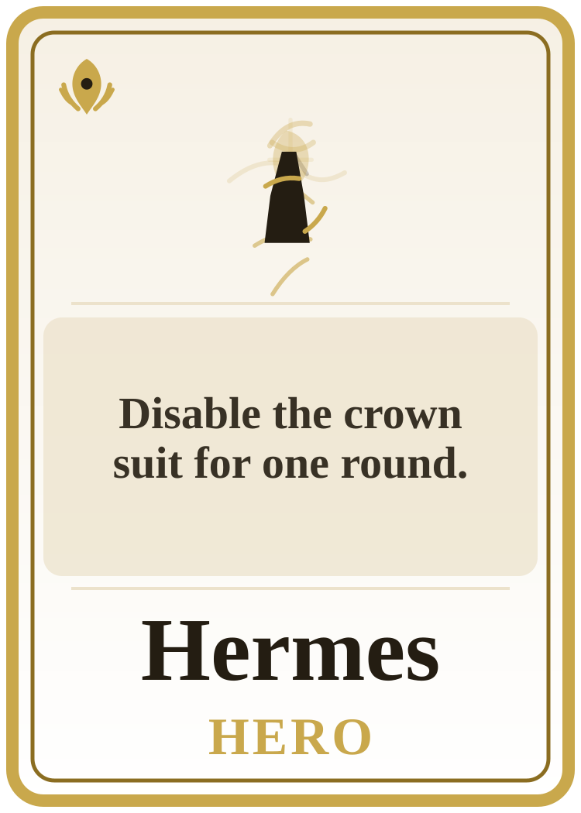
Disable the crown suit for one round. A swift divine messenger with winged sandals and traveler's cloak, playful but...
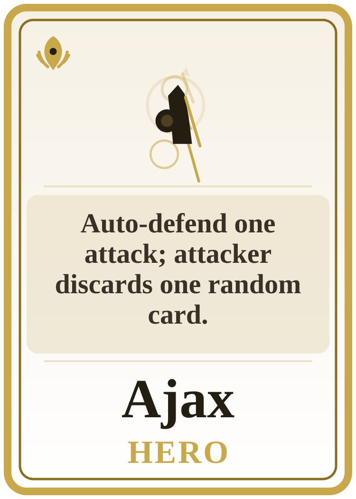
Auto-defend one attack; attacker discards one random card. A massive shield-bearing hero in heavy bronze armor, grounded and immovable, with...
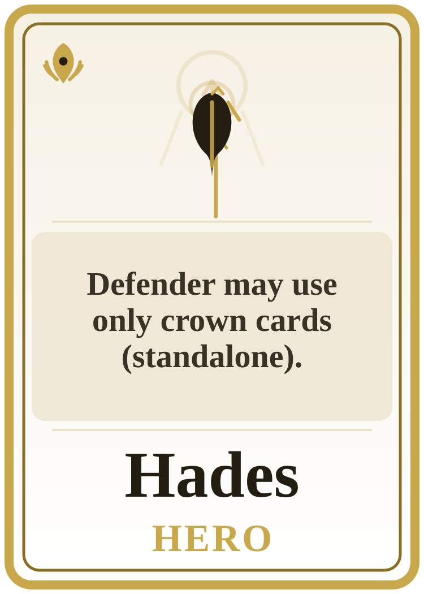
Defender may use only crown cards (standalone). A severe underworld king in shadowed regalia with a bident and funerary...
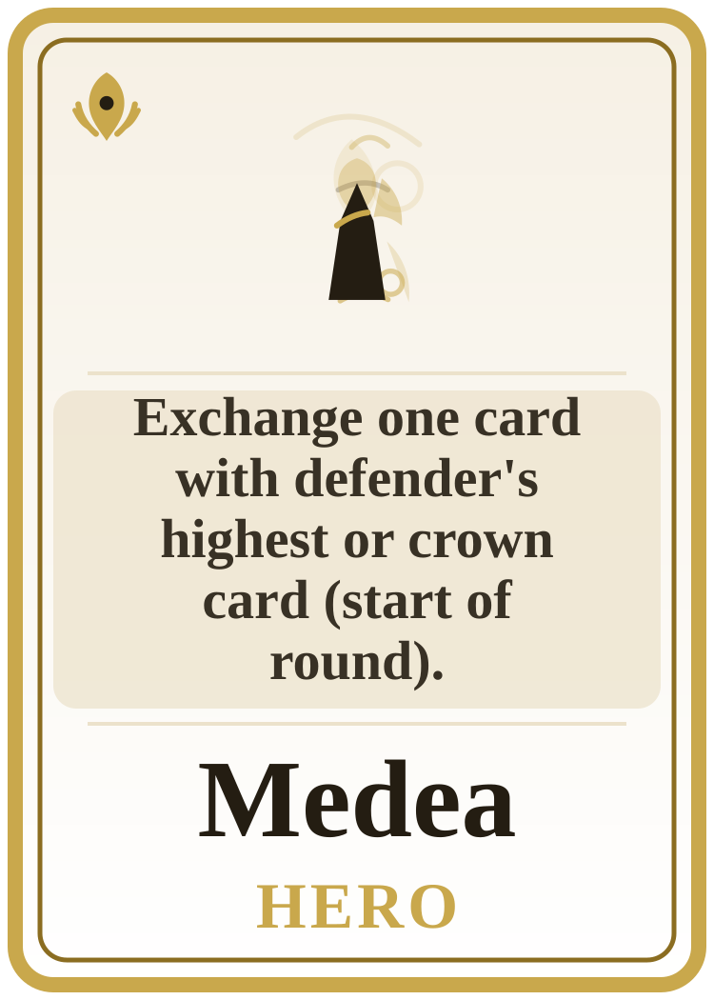
Exchange one card with defender's highest or crown card (start of round). A dangerous sorceress in dark royal robes with potion-glass, moonlit magic, and...
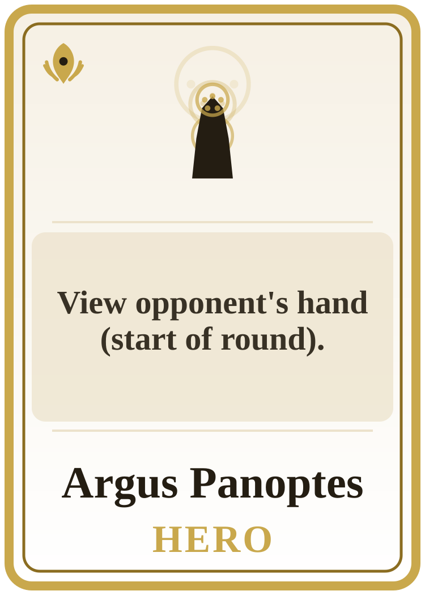
View opponent's hand (start of round). A relentless mythic watcher with many-eyed motifs worked into cloak, armor, or...
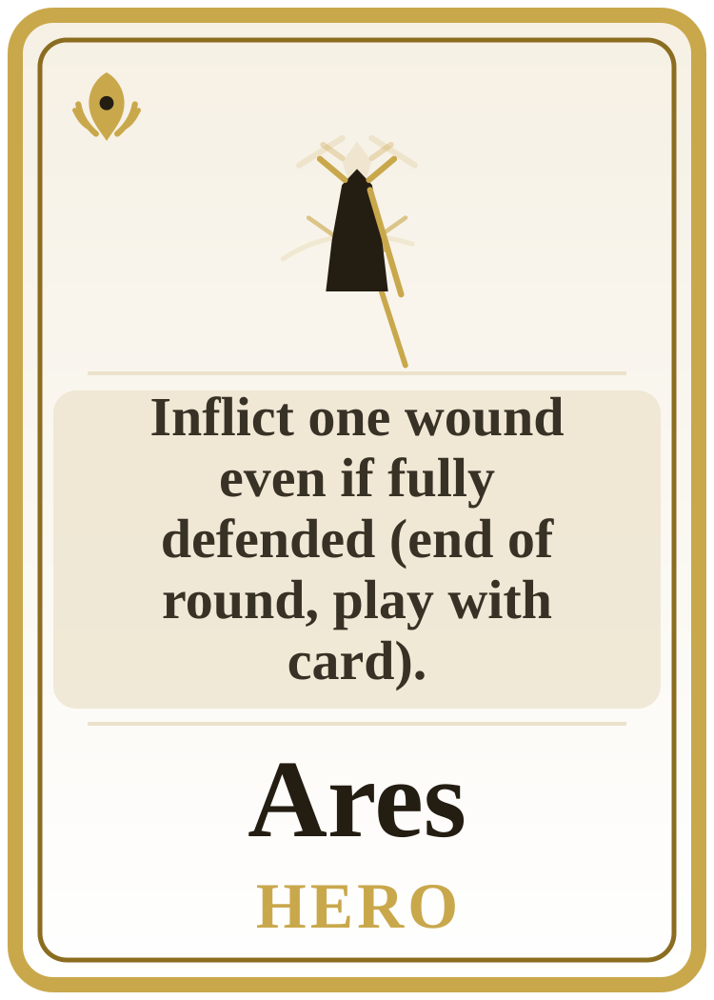
Inflict one wound even if fully defended (end of round, play with card). A brutal war god in storm-dark armor, spear and helm dominant, radiating...
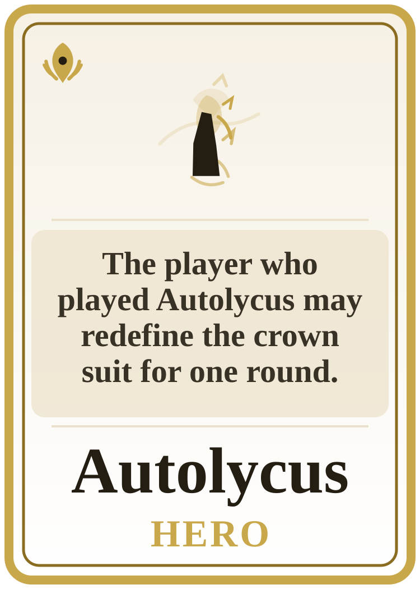
The player who played Autolycus may redefine the crown suit for one round. A sly thief-prince with foxlike cunning, light armor, and a smirking unstable...
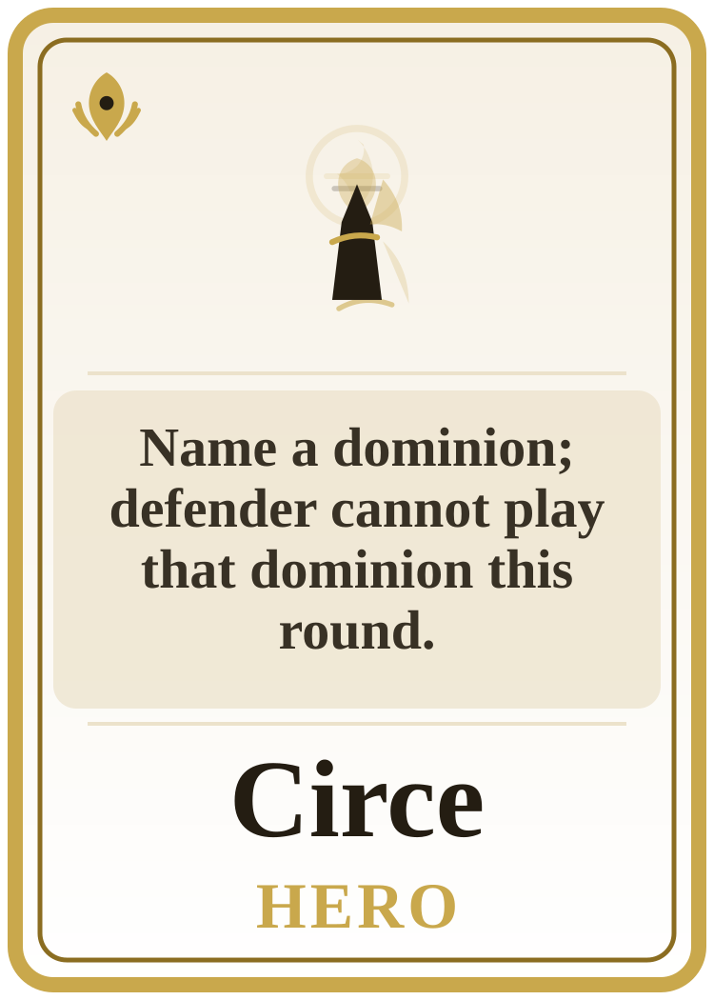
Name a dominion; defender cannot play that dominion this round. A mesmerizing enchantress with ritual cup, island-magic atmosphere, and an expression of...